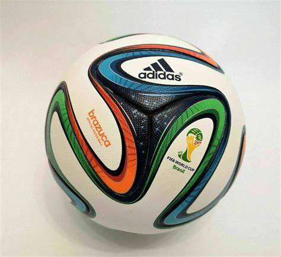

Puma:
The first well-known football manufacturers and created by Rudolf Dassler in 1947.
They currenty have edged more towards jerseys in the twenty first centrury(man city) but were one of the main contenders in the football game.
Adidas:
The creator of Puma's (Rudolf Dossler) brother founded Adidas as there was a family rivalry. They are the top producer of world cup footballs worldwide and have been since 1970 every year
they wanted to redefine the football by another adding a new colour schemue or more pannels. 2010 brought the Jabulani which was seen as a controversiol football because if would randomly spin in different directions.

Nike:
One of The most famous brand of sportswear created by Phil knight and bill bowermann in 1964. They were often trying to compete with Adidas for the top selling football of the year.
but have now decided to focus more on football boots which are worn by the best players in the world